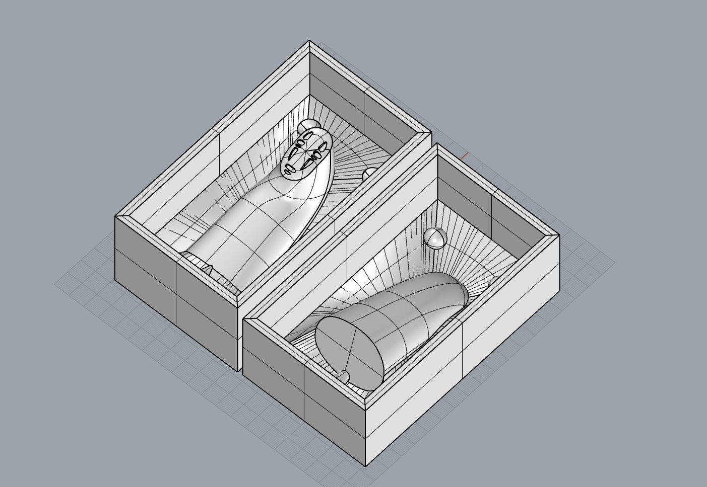
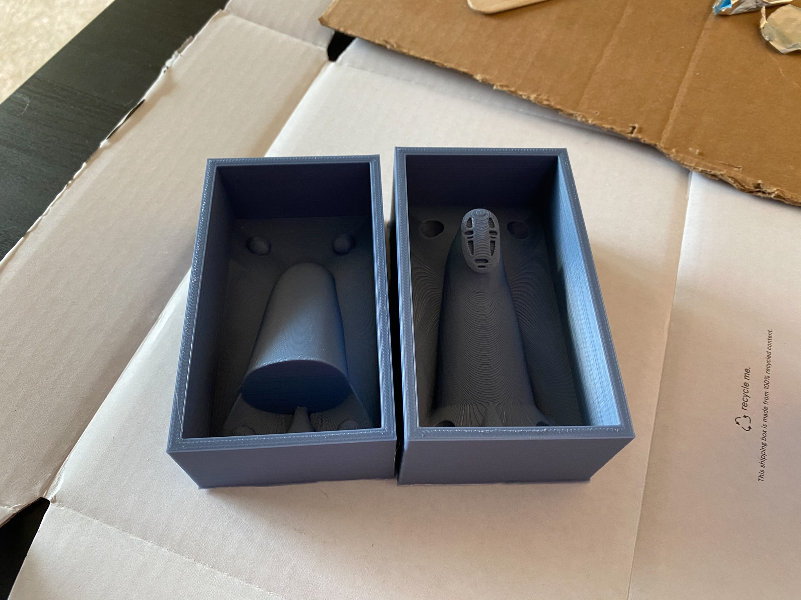

Molding and Casting Part 2: Kaonashi
I created a mold and casts of Kaonashi, "No-face", from the Studio Ghibli film Spirited Away. I think Kaonashi is a very recognizable character and would make a good mold due to being smooth without many fine features. I 3D-printed a mold for the mold, cast silicone into it, and then cast plaster into the silicone mold. I also used acrylic paints to paint one of the final models.
I found a mesh that I liked of Kaonashi on Thingiverse. I tried a few different methods for creating the 3D model of the mold, but I eventually found an instructable published by McNeal/Rhino on using Rhino for two-part molds which was very instructive! I tried using the mesh from thingiverse for a while, but kept running into problems so I decided to CAD my own Kaonashi model. It turned out to be a pretty simple model, with just a few lofts. I traced the face from a still of Kaonashi from the film and subtracted the details from the model. That left me with this model:
I extracted a silhouette of the model and created a parting surface by doint a 2-rail sweep along the silhouette. I also added keys and a pour spout to the model:

I copied the model, raised the sides, and boolean differenced/unioned everything together.
Now, I had my two mold halves ready to export and slice in Cura. I sliced this one at relatively low settings because it was going to take a long time to print and I was planning on sanding the final model. I also wanted to use this as a test run to get the process down - I have another model of the companion cube from portal that I'm going to make at a much higher quality next.
I printed the mold in 3D Solutech Denim PLA. Each half took about seven hours.
Next step: Oomoo! I mixed it well, using a kitchen scale to measure it 1:1 by weight. I slooowwwwly poured it into the mold, starting with the lowest areas. I poured in a very thin stream to avoid bubbles as much as possible. Once I finished pouring the silicone, I dropped each m old half on the table a number of times to dislodge as many of the air bubbles as possible.
I was happy with how the silicone mold turned out. I didn't have any bubbles, but the low reseolution I printed at was definitely apparent
Now was time to cast. I mixed my plaster and poured it into the mold, again very slowly. Before I closed the mold up, I started by pouring the plaster into the face area so I could be sure that the plaster reached all of the little details. I could only find one rubber band for my mold, so I also used some masking tape.
After about 30 minutes, I de-molded the figure. It was still warm from the exothermic plaster, but it turned out great!
I like the plaster look, but I wanted to paint one of the models. I sanded it outside with 90 and 150 grit sandpaper to smooth out the layer lines from the 3d printing process, and painted it with acrylic paint.
Tada!
I woke up this morning with him staring at me. It was a little offputting